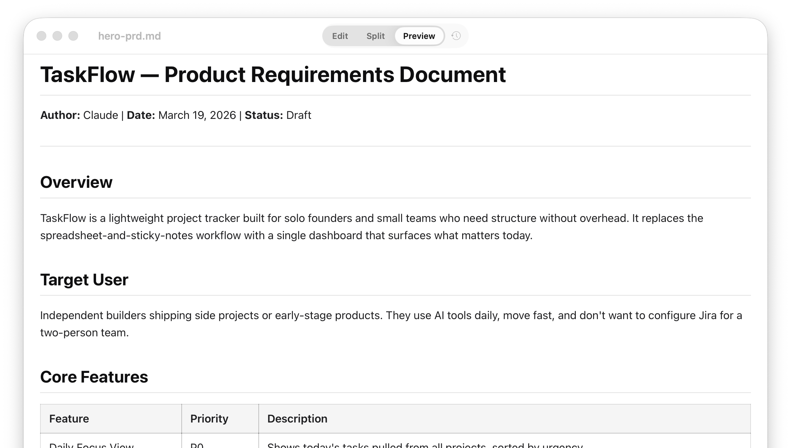
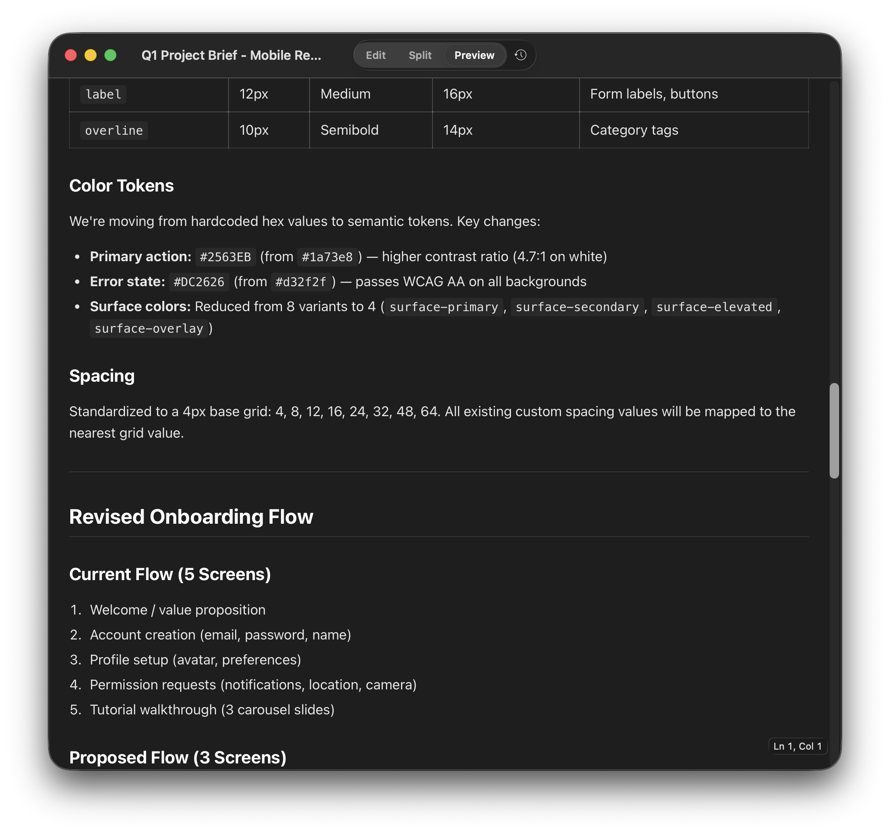
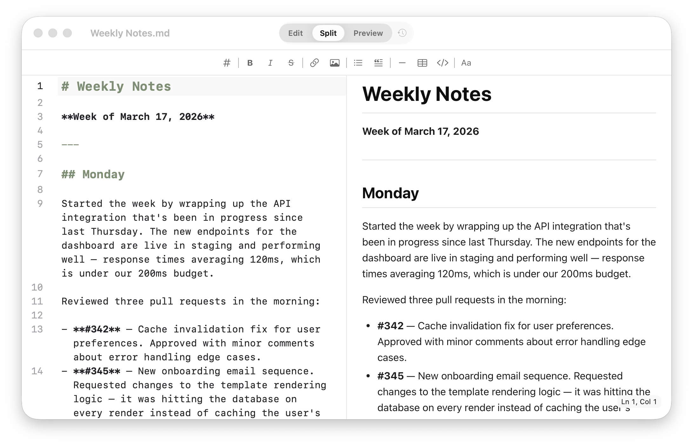

Preview Mode
The default. Double-click and read without seeing the syntax unless you want to.

AI tools speak markdown. Litepad makes it beautiful, readable, and easy to preview the moment you open a file.

The default. Double-click and read without seeing the syntax unless you want to.
Switch to the editor when you need to make changes — markdown toolbar included.

For late-night reading sessions, system-matched themes, and lower glare.

VS Code, GitHub, Obsidian — they all render markdown, but they're tools you work inside. Litepad is the reader that lives outside. Double-click any .md file in Finder and it opens instantly — no project, no workspace, no account.

See source and output side by side when you need context without losing readability.

Works with the tools you already use. Every AI assistant exports markdown somewhere in the workflow. Litepad is the clean reading layer on top.
“Litepad turns the markdown files I get out of Claude and Cursor into something I can actually review like a document. It removed the awkward step where I had to paste everything somewhere else just to read it comfortably.”
“The PDF comparison made sense instantly. Markdown finally has a reader that feels obvious.”
“Preview mode is exactly what I wanted: double-click, read, done.”
“Split view makes it easy to sanity-check markdown structure without giving up a clean reading experience.”
Free on the Mac App Store. No account needed.
Download on the Mac App StoreAlso from our team: Sidepad — capture AI conversations from your browser.